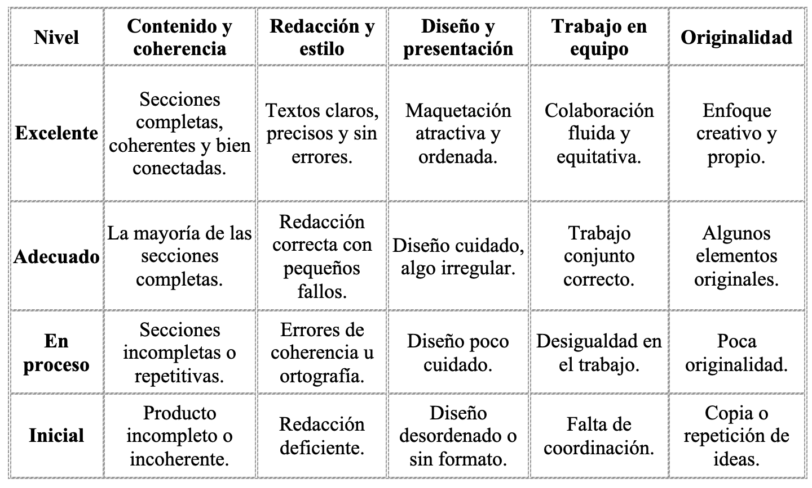

Información inicial
“Hemos aprendido a escribir, a investigar y a pensar… ahora nos toca contar lo que somos.”
Duración estimada: 3 semanas (18 sesiones).
Ámbitos implicados: Lengua Castellana y Literatura · Geografía e Historia · Valores Éticos y Cívicos.
Competencias: CCL · CD · CE · CPSAA · CC.
🎯 Objetivo de esta fase
Elaborar y publicar el periódico escolar como producto final del trimestre, integrando noticias, infografías y secciones creadas por el alumnado.
El proceso incluirá la organización del trabajo en equipo, la revisión y corrección colectiva, y la difusión responsable del resultado.
¿Qué vamos a hacer?
Llegó el momento que estábamos esperando: nuestro periódico está a punto de ver la luz.
En esta fase nos convertiremos en redactores, diseñadores y editores del IES Roces News.
Vamos a seleccionar las mejores noticias, las infografías más impactantes y los artículos de opinión más reflexivos para crear nuestro propio medio de comunicación.
Cada grupo será responsable de una sección, y entre todos construiremos una publicación que refleje cómo vemos el mundo desde el aula.
Actividad 1. Organización de la redacción.
Dividimos la clase en grupos y asignamos a cada uno una sección del periódico:
📰 Portada y editorial
🌍 Sociedad y actualidad
🎭 Cultura y ocio
⚽ Deportes
🌱 Medioambiente y ODS
🧠 Opinión y valores éticos
💬 Cada grupo debéis decidir:
- Qué noticias incluiréis.
- Quién escribirá cada texto.
- Qué imágenes o infografías acompañarán la sección.
Actividad 2 · Redacción y diseño del periódico
Utilizad vuestras noticias, entrevistas e infografías para maquetar el periódico.
- Podéis hacerlo en formato digital o imprimible, usando herramientas como:
Canva (plantillas de periódicos).
[Google Docs o Publisher].
[Genially o Adobe Express].
💡 Pautas para el diseño:
- Título del periódico.
- Fecha, número y logo (si lo creáis).
- Distribución por secciones.
- Imágenes y textos breves.
- Cita de fuentes y autoría de cada artículo.
📤 Entrega: enlace o archivo PDF del periódico final.
Actividad 3. Presentamos el periódico.
Cada grupo presentará su sección al resto de la clase y explicará:
- Qué tema eligieron y por qué.
- Qué dificultades encontraron.
- Qué aprendieron al trabajar como periodistas.
A posteriori, el periódico se presentará y expondrá en el centro educativo.
Evaluación de la fase 5.
📋 ¿Cómo se evaluará esta parte?
- Calidad y coherencia de las secciones.
- Claridad en la redacción y corrección del texto.
- Diseño visual y presentación.
- Participación en el grupo y colaboración.
- Exposición oral del trabajo final.
🧩 Instrumentos: rúbrica global del periódico + observación directa.

Contenido DUA
♿ Medidas DUA:
- Plantilla de diseño guiada.
- Lectura fácil de las instrucciones.
- Posibilidad de participar mediante audio o vídeo.
- Revisión por pares con apoyo visual.
🗞️ Nuestro periódico no es solo un trabajo de clase: es una forma de contar lo que pensamos, sentimos y aprendemos.
Gracias a vuestro esfuerzo, habéis demostrado que la palabra puede cambiar el mundo.
¡Enhorabuena, periodistas del IES Roces News! 🎉